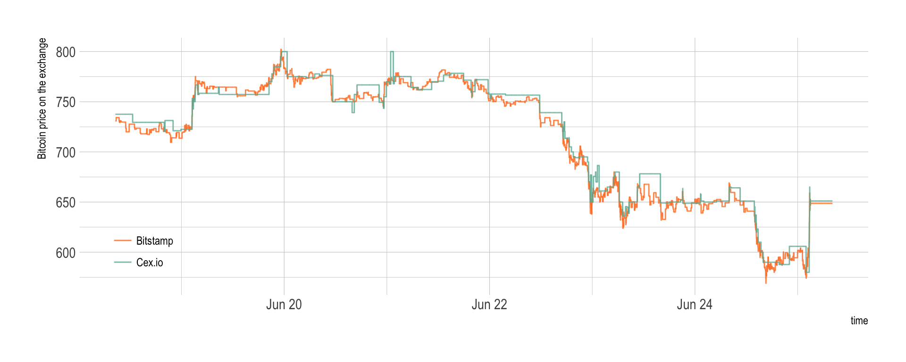
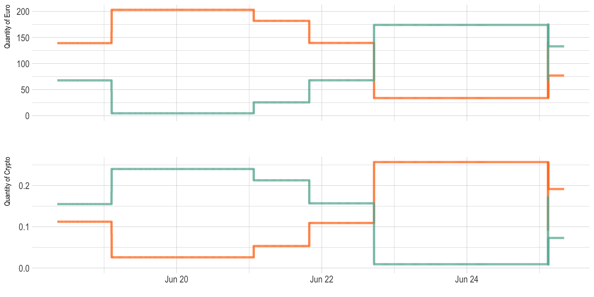
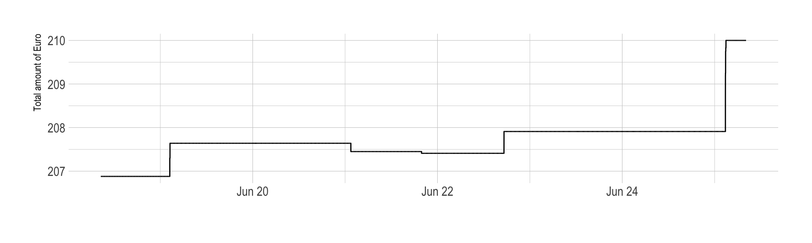
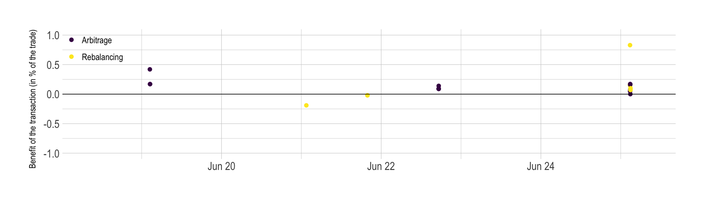

Arbitrage bot description.
Previous parts of this analysis harvested data on crypto prices for 5 exchanges and 5 currencies. It showed that price differences exist, offering arbitrage opportunities. It also described the behaviour of a bot realizing arbitrage.
# Library
library(tidyverse)
library(DT)
library(plotly)
library(viridis)
library(lubridate)
library(hrbrthemes)
library(lubridate)
library(ggrepel)
# Load result
load("~/Dropbox/CRYPTO/5_ARBITRAGE/BITSTAMP_CEX/arbitrage_bitstamp_cex_BCHEUR_18Jun.Rdata")
bilan[,-which(colnames(bilan)%in%c("transaction", "rebalance"))]= apply( bilan[,-which(colnames(bilan)%in%c("transaction", "rebalance"))], 2, as.numeric ) %>% as.tibble()
bilan$time=as.POSIXct( bilan$time, origin="1970-01-01")
# For each transaction, I calculate if it made me earn money or not.
bilan$gain=NA
bilan$gain[which(bilan$transaction=="yes")] = bilan$total_euro[ which(bilan$transaction=="yes") ] - bilan$total_euro[ which(bilan$transaction=="yes")-1 ]
# Time period:
from <- bilan$time %>% min %>% as.Date
to <- bilan$time %>% max %>% as.Date
lengthPeriod <- to - from
#Investment
investment <- bilan[1, "total"]
# Number of transaction
nb_transac <- bilan %>% filter(transaction=="yes") %>% nrow()
# Number of time stamp
nb_timeStamp <- nrow(bilan)
# Final amount of money I have
final=bilan$total[nrow(bilan)]
# What I would have without arbitrage
final_without = bilan$total_without_arbitrage[nrow(bilan)]
# Gain compare to no arbitrage in euro, and in % of investment
# --> This is what I have to optimize
diff=final-final_without
# Gain per 24hours?
length = bilan$time[nrow(bilan)] - bilan$time[1] # In character
length = as.numeric(as.duration(length)) / 3600 # In hours
diff_per_day=24*diff/ length
# Quantity of EURO
start_euro = bilan$total_euro[1]
end_euro = bilan$total_euro[nrow(bilan)]
gain_euro = end_euro - start_euro
# Quantity of CRYPTO
start_crypto <- bilan$total_crypto[1]
end_crypto <- bilan$total_crypto[nrow(bilan)]
gain_crypto <- end_crypto - start_crypto
gain_crypto_in_euro <- gain_crypto*bilan$last_plat1[nrow(bilan)]
# Quantity total
gain_total <- gain_euro + gain_crypto_in_euro
gain_total_percent <- gain_total / investment * 100
gain_total_percent_day <- gain_total_percent / time_length( lengthPeriod, unit="day")
gain_total_percent_year <- gain_total_percent_day * 365Here is an overview of the bot features:
- Currency - Bitcoin Cash (BCH)
- Exchanges - Bitstamp and Cex.io
- Period - from the 2018-06-17 to the 2018-06-24 (7 days)
- Trade amount - 21 euros
- Initial investment - 403.3 euros equally ditributed among exchange and currency
- Threshold for arbitrage - transaction were done when a difference over 0.8 % between exchanges was observed
- Threshold rebalancing - when a difference over 0.4 % was observed, funds were rebalanced between platform if necessary)
Bitcoin cash evolution on the period
Bitcoincash prices have been harvested every couple of second on the period, resulting in 85072 unique time stamps. The last value is represented on the next chart for both Bitstamp and Cex.io.
# Build color
col_bitstamp <- rgb(255/255, 123/255, 34/255, 0.8)
col_cex <- rgb(105/255, 179/255, 162/255, 0.8)
# Plot
bilan %>%
select(time, last_plat1, last_plat2) %>%
gather(plateform, value, -1) %>%
ggplot( aes(x=time, y=value, color=plateform)) +
geom_line() +
scale_color_manual(values=c(col_bitstamp, col_cex), name="", labels = c("Bitstamp", "Cex.io") ) +
ylab("Bitcoin price on the exchange") +
theme_ipsum() +
theme(
legend.position = c(0.08, 0.2)
) Basically, the prices started around 725 euros to reach 800 euros on the 20th of June and decrease continuously to reach 600 euros at the end of the period. Prices on both exchanges are very close, but a few discrepencies are visible, what will probably open a few arbitrage opportunities.
Price differences
At each time stamp, the arbitrage bot computed the price difference between exchanges in %. These differences are represented on the graphic below:
- the red line represents the price difference between buying at Cex and selling at Bitstamp.
- the blue line is the opposite: buying at Bitstamp and selling at Cex.
col_red <- rgb(255/255, 0/255, 0/255, 0.4)
col_blue <- rgb(0/255, 0/255, 255/255, 0.4)
# Plot price differences and arbitrage occurence
bilan %>%
mutate(vline_transac=ifelse(transaction=="yes" & rebalance=="no", time, NA)) %>%
mutate(vline_rebalance=ifelse(transaction=="yes" & rebalance=="yes", time, NA)) %>%
mutate(vline_transac=as.POSIXct(vline_transac, origin="1970-01-01")) %>%
mutate(vline_rebalance=as.POSIXct(vline_rebalance, origin="1970-01-01")) %>%
rowwise() %>%
select(time, diff_side1, diff_side2, transaction, vline_transac, vline_rebalance) %>%
gather( key=side, value=value, -c(1,4,5,6,7)) %>%
ggplot(aes(x=time, y=value, color=side)) +
geom_abline(slope=0, intercept=0, color="grey") +
geom_abline(slope=0, intercept=unique(bilan$thres), color="grey", linetype="dashed") +
geom_vline( aes(xintercept=vline_transac), color="orange") +
geom_vline( aes(xintercept=vline_rebalance), color="pink") +
geom_line() +
scale_color_manual(values=c(col_red, col_blue)) +
xlab("") +
theme_ipsum() +
ylim(-7,7) +
theme(legend.position="none") 
Since the Cex price is often over the Bitstamp price, it is often better to buy at Bitstamp and sell a Cex (the blue line).
Arbitrage bot behaviour
In the above graphic, vertical orange lines represent an arbitrage transaction. Pink vertical lines represent a rebalancing situation. When the price difference reach the bot treshold of 0.8%, 21 euros of crypto are bought on an exchange and sold on the other.
These transaction are represented on the next graphic, where the quantity of Euro (top) and the quantity of Crypto (bottom) are represented for Bitstamp and Cex.io.
# Quantity of euro on both exchanges:
c=bilan %>%
select(time, euro_plat1, euro_plat2) %>%
gather(plateform, value, -1) %>%
mutate(label = if_else(time == max(time), as.character(plateform), NA_character_)) %>%
ggplot( aes(x=time, y=value, color=plateform, group=plateform)) +
geom_line(size=1.3) +
scale_color_manual(values=c(col_bitstamp, col_cex), name="", labels = c("Bitstamp", "Cex.io") ) +
theme_ipsum() +
theme(
legend.position="none",
axis.text.x = element_blank(),
axis.ticks.x = element_blank(),
plot.margin = unit(c(1,1,0,1), "cm")
) +
ylab("Quantity of Euro") +
expand_limits(y=0) +
xlab("")
# Quantity of crypto on both exchanges
d=bilan %>%
select(time, crypto_plat1, crypto_plat2) %>%
gather(plateform, value, -1) %>%
ggplot( aes(x=time, y=value, color=plateform)) +
geom_line(size=1.3) +
scale_color_manual(values=c(col_bitstamp, col_cex), name="", labels = c("Bitstamp", "Cex.io") ) +
theme_ipsum() +
theme(
legend.position="none",
plot.margin = unit(c(1,1,0,1), "cm")
) +
ylab("Quantity of Crypto") +
expand_limits(y=0) +
xlab("")
library(patchwork)
c + d + plot_layout(ncol = 1)
So basically, when the bot find that Cex.io is significantly cheaper than Bitstamp (first break), it buys crypto on Cex.io and sells some on Bitstamp. Thus the Bitstamp amount of euro increases and the Bitstamp amount of crypto increases. Conversely for Cex.io.
Did it make money?
At each transaction the bot is supposed to make a tiny margin, thus the total quantity of euro is suppose to slowly increase. Indeed, the process started with 206.88 and finished with 210, what is a gain of 3.12.
# Zoom on the total quantity of euro I have
bilan %>%
ggplot(aes(x=time, y=total_euro)) +
geom_line(color="black") +
theme_ipsum() +
ylab("Total amount of Euro") +
xlab("")
#p2 <- bilan %>%
# ggplot(aes(x=time, y=total_crypto)) +
# geom_line(color="black") +
# theme_ipsum() +
# ylab("Total amount of Crypto") +
# xlab("")However it is important to notice that the bot is imperfect, and the quantity of crypto has not been maintained as planned. Indeed, -0.00293 have been lost, what represents -1.9 euros. Thus the real amount of money we made is actually 1.2165007. This represent a benefit of 0.3016489% of our initial investment.
Said differently, the bot made a profit of 0.0430927% per day, what looks tiny but still represents a benefit of 15.7288359% a year, which is still much more than the bank would offer me.
bilan %>%
ggplot(aes(x=time, y=gain, color=as.factor(rebalance))) +
geom_point() +
scale_color_viridis(discrete=TRUE, labels=c("Arbitrage", "Rebalancing"), name="") +
geom_abline(slope=0, size=0.3 ) +
theme_ipsum() +
ylim(-1, 1) +
theme(legend.position=c(.05, .9))+
xlab("") +
ylab("Benefit of the transaction (in % of the trade)")
Why I won’t become rich using arbitrage
Even if this work is a good proof of concept of what crypto arbitrage is, it is quite unlikely that I will ever get rich using this technique.
Next step
The next step is to understand what arbitrage is in depth, and study its potential limitations.
A work by Yan Holtz for data-to-viz.com